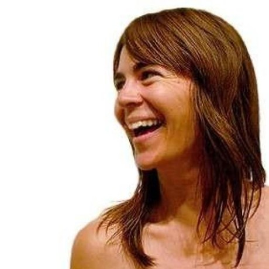

Product design / Design leadership
Product design / Design leadership

I shape and ship digital product experiences for publications and platforms where editorial ambition, product systems, business needs, and internal workflows intersect, spanning product and editorial strategy, research synthesis, UX/UI, visual design, design systems, and team leadership.
I'm especially interested in tools that help people create great work with less friction: publishing workflows, modular story formats, agentic workstreams, and product language that gives teams a shared way to provide solutions.